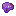
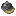
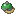
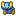
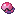
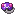
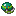
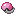

Create: Cobblemon Industrialized
附属模组
这个 Mod 为 机械动力 添加了更多有关 方块宝可梦 的物品制作配方
这是什么
这个 Mod 为 机械动力 添加了更多有关 方块宝可梦 的物品制作配方；
命名空间：
create_cobblemon 1.20.1 版本：本页物品与配方直接取自该版本的 jar。盖50
Ancient Black Ball Lidcreate_cobblemon:ancient_black_ball_lid
Ancient Blue Ball Lidcreate_cobblemon:ancient_blue_ball_lid
Ancient Feather Ball Lidcreate_cobblemon:ancient_feather_ball_lid
Ancient Gigaton Ball Lidcreate_cobblemon:ancient_gigaton_ball_lid
Ancient Great Ball Lidcreate_cobblemon:ancient_great_ball_lid
Ancient Green Ball Lidcreate_cobblemon:ancient_green_ball_lid
Ancient Heavy Ball Lidcreate_cobblemon:ancient_heavy_ball_lid
Ancient Jet Ball Lidcreate_cobblemon:ancient_jet_ball_lid
Ancient Leaden Ball Lidcreate_cobblemon:ancient_leaden_ball_lid
Ancient Pink Ball Lidcreate_cobblemon:ancient_pink_ball_lid
Ancient Red Ball Lidcreate_cobblemon:ancient_red_ball_lid
Ancient Ultra Ball Lidcreate_cobblemon:ancient_ultra_ball_lid
Ancient White Ball Lidcreate_cobblemon:ancient_white_ball_lid
Ancient Wing Ball Lidcreate_cobblemon:ancient_wing_ball_lid
Ancient Yellow Ball Lidcreate_cobblemon:ancient_yellow_ball_lid
Beast Ball Lidcreate_cobblemon:beast_ball_lid
Black Ball Lidcreate_cobblemon:black_ball_lid
Blue Ball Lidcreate_cobblemon:blue_ball_lid
Dive Ball Lidcreate_cobblemon:dive_ball_lid
Dream Ball Lidcreate_cobblemon:dream_ball_lid
Dusk Ball Lidcreate_cobblemon:dusk_ball_lid
Fast Ball Lidcreate_cobblemon:fast_ball_lid
Friend Ball Lidcreate_cobblemon:friend_ball_lid
Great Ball Lidcreate_cobblemon:great_ball_lid
Green Ball Lidcreate_cobblemon:green_ball_lid
Heal Ball Lidcreate_cobblemon:heal_ball_lid
Heavy Ball Lidcreate_cobblemon:heavy_ball_lid

Incomplete Master Ball Lidcreate_cobblemon:incomplete_master_ball_lid
Level Ball Lidcreate_cobblemon:level_ball_lid
Love Ball Lidcreate_cobblemon:love_ball_lid
Lure Ball Lidcreate_cobblemon:lure_ball_lid
Luxury Ball Lidcreate_cobblemon:luxury_ball_lid
Master Ball Lidcreate_cobblemon:master_ball_lid
Moon Ball Lidcreate_cobblemon:moon_ball_lid
Nest Ball Lidcreate_cobblemon:nest_ball_lid
Net Ball Lidcreate_cobblemon:net_ball_lid
Park Ball Lidcreate_cobblemon:park_ball_lid
Pink Ball Lidcreate_cobblemon:pink_ball_lid
Quick Ball Lidcreate_cobblemon:quick_ball_lid
Red Ball Lidcreate_cobblemon:red_ball_lid
Repeat Ball Lidcreate_cobblemon:repeat_ball_lid
Safari Ball Lidcreate_cobblemon:safari_ball_lid
Sport Ball Lidcreate_cobblemon:sport_ball_lid
Timer Ball Lidcreate_cobblemon:timer_ball_lid
Ultra Ball Lidcreate_cobblemon:ultra_ball_lid
White Ball Lidcreate_cobblemon:white_ball_lid
Yellow Ball Lidcreate_cobblemon:yellow_ball_lid
Black Tumblestone Lidcreate_cobblemon:black_tumblestone_lid
Sky Tumblestone Lidcreate_cobblemon:sky_tumblestone_lid
Tumblestone Lidcreate_cobblemon:tumblestone_lid
incomplete pokéball47

Incomplete Pokéballcreate_cobblemon:incomplete_ancient_black_ball
没有工作台/机器配方
Incomplete Pokéballcreate_cobblemon:incomplete_ancient_blue_ball
没有工作台/机器配方
Incomplete Pokéballcreate_cobblemon:incomplete_ancient_feather_ball
没有工作台/机器配方
Incomplete Pokéballcreate_cobblemon:incomplete_ancient_gigaton_ball
没有工作台/机器配方
Incomplete Pokéballcreate_cobblemon:incomplete_ancient_great_ball
没有工作台/机器配方

Incomplete Pokéballcreate_cobblemon:incomplete_ancient_green_ball
没有工作台/机器配方
Incomplete Pokéballcreate_cobblemon:incomplete_ancient_heavy_ball
没有工作台/机器配方
Incomplete Pokéballcreate_cobblemon:incomplete_ancient_jet_ball
没有工作台/机器配方
Incomplete Pokéballcreate_cobblemon:incomplete_ancient_leaden_ball
没有工作台/机器配方
Incomplete Pokéballcreate_cobblemon:incomplete_ancient_pink_ball
没有工作台/机器配方
Incomplete Pokéballcreate_cobblemon:incomplete_ancient_red_ball
没有工作台/机器配方
Incomplete Pokéballcreate_cobblemon:incomplete_ancient_ultra_ball
没有工作台/机器配方
Incomplete Pokéballcreate_cobblemon:incomplete_ancient_white_ball
没有工作台/机器配方
Incomplete Pokéballcreate_cobblemon:incomplete_ancient_wing_ball
没有工作台/机器配方
Incomplete Pokéballcreate_cobblemon:incomplete_ancient_yellow_ball
没有工作台/机器配方
Incomplete Pokéballcreate_cobblemon:incomplete_azure_ball
没有工作台/机器配方

Incomplete Pokéballcreate_cobblemon:incomplete_beast_ball
没有工作台/机器配方
Incomplete Pokéballcreate_cobblemon:incomplete_cherish_ball
没有工作台/机器配方
Incomplete Pokéballcreate_cobblemon:incomplete_citrine_ball
没有工作台/机器配方
Incomplete Pokéballcreate_cobblemon:incomplete_dive_ball
没有工作台/机器配方

Incomplete Pokéballcreate_cobblemon:incomplete_dream_ball
没有工作台/机器配方
Incomplete Pokéballcreate_cobblemon:incomplete_dusk_ball
没有工作台/机器配方
Incomplete Pokéballcreate_cobblemon:incomplete_fast_ball
没有工作台/机器配方
Incomplete Pokéballcreate_cobblemon:incomplete_friend_ball
没有工作台/机器配方
Incomplete Pokéballcreate_cobblemon:incomplete_great_ball
没有工作台/机器配方
Incomplete Pokéballcreate_cobblemon:incomplete_heal_ball
没有工作台/机器配方
Incomplete Pokéballcreate_cobblemon:incomplete_heavy_ball
没有工作台/机器配方
Incomplete Pokéballcreate_cobblemon:incomplete_level_ball
没有工作台/机器配方
Incomplete Pokéballcreate_cobblemon:incomplete_love_ball
没有工作台/机器配方
Incomplete Pokéballcreate_cobblemon:incomplete_lure_ball
没有工作台/机器配方
Incomplete Pokéballcreate_cobblemon:incomplete_luxury_ball
没有工作台/机器配方

Incomplete Pokéballcreate_cobblemon:incomplete_master_ball
没有工作台/机器配方
Incomplete Pokéballcreate_cobblemon:incomplete_moon_ball
没有工作台/机器配方
Incomplete Pokéballcreate_cobblemon:incomplete_nest_ball
没有工作台/机器配方
Incomplete Pokéballcreate_cobblemon:incomplete_net_ball
没有工作台/机器配方

Incomplete Pokéballcreate_cobblemon:incomplete_park_ball
没有工作台/机器配方
Incomplete Pokéballcreate_cobblemon:incomplete_poke_ball
没有工作台/机器配方
Incomplete Pokéballcreate_cobblemon:incomplete_premier_ball
没有工作台/机器配方
Incomplete Pokéballcreate_cobblemon:incomplete_quick_ball
没有工作台/机器配方
Incomplete Pokéballcreate_cobblemon:incomplete_repeat_ball
没有工作台/机器配方
Incomplete Pokéballcreate_cobblemon:incomplete_safari_ball
没有工作台/机器配方
Incomplete Pokéballcreate_cobblemon:incomplete_slate_ball
没有工作台/机器配方
Incomplete Pokéballcreate_cobblemon:incomplete_sport_ball
没有工作台/机器配方
Incomplete Pokéballcreate_cobblemon:incomplete_timer_ball
没有工作台/机器配方
Incomplete Pokéballcreate_cobblemon:incomplete_ultra_ball
没有工作台/机器配方
Incomplete Pokéballcreate_cobblemon:incomplete_verdant_ball
没有工作台/机器配方

Incomplete Pokéballcreate_cobblemon:incomplete_roseate_ball
没有工作台/机器配方
其他6
Crushed Exp. Quartzcreate_cobblemon:crushed_exp_quartz
Exp. Quartzcreate_cobblemon:exp_quartz
Iron Ball Basecreate_cobblemon:iron_ball_base
Small Exp. Quartz Tilescreate_cobblemon:exp_quartz_small_tiles
没有工作台/机器配方
Exp. Quartz Tilescreate_cobblemon:exp_quartz_tiles
没有工作台/机器配方
Exp. Quartz Blockcreate_cobblemon:expquartzblock
没有工作台/机器配方